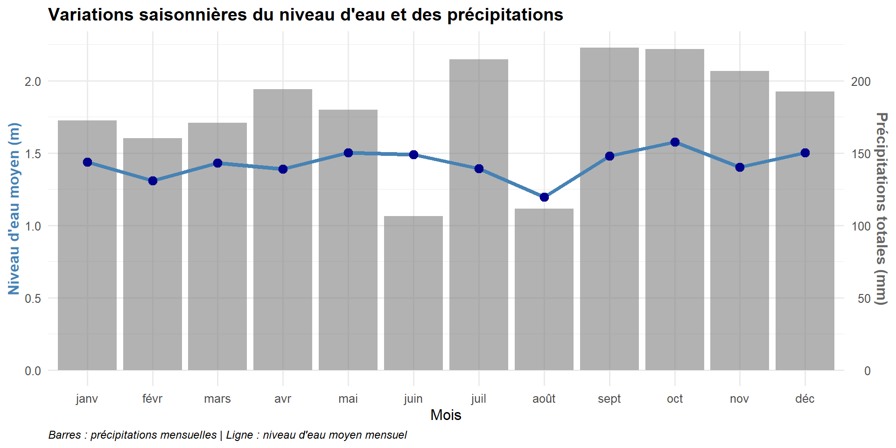

Hyétogramme - La Pique à Bagnères-de-Luchon
Station O004402001 - La Pique à Bagnères-de-Luchon | Relation entre précipitations et niveau d’eau (2024)
Station hydrométrique O004 4020 01
La Pique à Bagnères-de-Luchon - Pyrénées, Haute-Garonne (31)
Ce document présente l’analyse de la relation entre les précipitations et le niveau d’eau de la rivière La Pique au cours de l’année 2024.
Localisation de la station
NoteSources des données
Données hydrométriques réelles : Hub’Eau API Hydrométrie - Station O004402001
Données pluviométriques réelles : - Météo-France Open Data - Département 31 (Haute-Garonne) - Meteoblue Bagnères-de-Luchon
Note : Les données hydrométriques sont réelles (API Hub’Eau). Les données pluviométriques sont simulées à des fins de démonstration avec des patterns saisonniers réalistes pour les Pyrénées.
Collecte des données
Script Python de collecte automatique
Le fichier fetch_pique_data.py permet de récupérer automatiquement les données hydrométriques depuis l’API Hub’Eau.
Utilisation pour la station actuelle :
python fetch_pique_data.pyAdaptation pour une autre station :
Pour utiliser ce script avec une autre station hydrométrique :
- Trouvez le code de votre station sur Hydro Portail
- Modifiez les paramètres dans le script :
# Dans fetch_pique_data.py, ligne 14
params = {
"code_entite": "O004402001", # ← Remplacez par votre code station
"grandeur_hydro": "H",
"date_debut_obs_elab": "2024-01-01",
"date_fin_obs_elab": "2024-12-31",
"size": 5000
}- Récupérez les coordonnées GPS de votre station sur la page de la station
- Mettez à jour les métadonnées YAML dans ce document :
station:
code: "VOTRE_CODE_STATION"
name: "Nom de la rivière et localisation"
latitude: 42.806 # ← Votre latitude
longitude: 0.603 # ← Votre longitude
department: "XX" # ← Code département
region: "Nom région"Exemple pour une autre station :
Pour la station “La Garonne à Toulouse” (code O205101001) :
station:
code: "O205101001"
name: "La Garonne à Toulouse"
latitude: 43.604
longitude: 1.444
department: "31"
region: "Haute-Garonne"Le script et tous les graphiques s’adapteront automatiquement aux nouvelles métadonnées.
Structure des données
Le fichier CSV généré contient trois colonnes :
date: Date au format YYYY-MM-DDwater_level_m: Niveau d’eau en mètres (données réelles Hub’Eau)rainfall_mm: Précipitations en millimètres (simulées)
Aperçu des premières lignes du fichier CSV :
Code
# Lire les premières lignes du CSV
csv_preview <- read_csv("pique_data_2024.csv", show_col_types = FALSE) %>%
head(10)
knitr::kable(csv_preview,
caption = "Aperçu des 10 premières lignes du fichier pique_data_2024.csv",
digits = 3,
format.args = list(big.mark = ""))| date | water_level_m | rainfall_mm |
|---|---|---|
| 2024-01-01 | 1.169 | 3.5 |
| 2024-01-02 | 1.190 | 14.0 |
| 2024-01-03 | 1.257 | 3.5 |
| 2024-01-04 | 1.424 | 3.5 |
| 2024-01-05 | 1.412 | 3.5 |
| 2024-01-06 | 1.361 | 3.5 |
| 2024-01-07 | 1.317 | 10.9 |
| 2024-01-08 | 1.526 | 3.7 |
| 2024-01-09 | 1.524 | 17.8 |
| 2024-01-10 | 1.534 | 3.5 |
Lecture et préparation des données
Code
# Charger les données
data <- read_csv("pique_data_2024.csv", show_col_types = FALSE) %>%
mutate(
date = as.Date(date),
month = month(date, label = TRUE, abbr = TRUE),
water_level_median = rollmedian(water_level_m, k = 7, fill = NA, align = "center")
)
# Afficher un aperçu
glimpse(data)Rows: 366
Columns: 5
$ date <date> 2024-01-01, 2024-01-02, 2024-01-03, 2024-01-04, 20…
$ water_level_m <dbl> 1.169, 1.190, 1.257, 1.424, 1.412, 1.361, 1.317, 1.…
$ rainfall_mm <dbl> 3.5, 14.0, 3.5, 3.5, 3.5, 3.5, 10.9, 3.7, 17.8, 3.5…
$ month <ord> janv, janv, janv, janv, janv, janv, janv, janv, jan…
$ water_level_median <dbl> NA, NA, NA, 1.317, 1.361, 1.412, 1.424, 1.524, 1.52…Statistiques descriptives
Code
summary_stats <- data %>%
summarise(
`Niveau d'eau moyen (m)` = round(mean(water_level_m, na.rm = TRUE), 2),
`Niveau d'eau max (m)` = round(max(water_level_m, na.rm = TRUE), 2),
`Niveau d'eau min (m)` = round(min(water_level_m, na.rm = TRUE), 2),
`Précipitation totale (mm)` = round(sum(rainfall_mm, na.rm = TRUE), 1),
`Précipitation moyenne (mm/jour)` = round(mean(rainfall_mm, na.rm = TRUE), 1)
)
knitr::kable(summary_stats, caption = "Statistiques annuelles 2024")| Niveau d’eau moyen (m) | Niveau d’eau max (m) | Niveau d’eau min (m) | Précipitation totale (mm) | Précipitation moyenne (mm/jour) |
|---|---|---|---|---|
| 1.43 | 2.48 | 1.11 | 2155 | 5.9 |
Hyétogramme
L’hyétogramme ci-dessous montre :
- Graphique du haut : Précipitations journalières (barres grises pointant vers le bas)
- Graphique du bas : Niveau d’eau journalier (barres bleues) et médiane mobile sur 7 jours (courbe bleue)
Code
if (knitr::is_html_output()) {
# Version interactive avec plotly pour HTML
# Graphique des précipitations (inversé)
fig_rain <- plot_ly(data, x = ~date, y = ~(-rainfall_mm), type = 'bar',
marker = list(color = 'rgba(128, 128, 128, 0.6)'),
name = 'Précipitations',
hovertemplate = paste('<b>%{x|%Y-%m-%d}</b><br>',
'Précipitations: %{customdata} mm<extra></extra>'),
customdata = ~rainfall_mm) %>%
layout(yaxis = list(title = 'Précipitations (mm)',
tickformat = ',d',
tickvals = seq(-60, 0, 10),
ticktext = seq(60, 0, -10),
showgrid = TRUE,
gridcolor = 'rgba(128, 128, 128, 0.2)'),
xaxis = list(title = '', showticklabels = FALSE),
margin = list(t = 80, b = 0))
# Graphique du niveau d'eau
fig_water <- plot_ly(data) %>%
add_bars(x = ~date, y = ~water_level_m,
marker = list(color = 'rgba(70, 130, 180, 0.7)'),
name = 'Niveau d\'eau',
hovertemplate = paste('<b>%{x|%Y-%m-%d}</b><br>',
'Niveau: %{y:.3f} m<extra></extra>')) %>%
add_lines(x = ~date, y = ~water_level_median,
line = list(color = 'rgb(0, 0, 139)', width = 2),
name = 'Médiane mobile (7j)',
hovertemplate = paste('<b>%{x|%Y-%m-%d}</b><br>',
'Médiane: %{y:.3f} m<extra></extra>')) %>%
layout(yaxis = list(title = 'Niveau d\'eau (m)',
showgrid = TRUE,
gridcolor = 'rgba(128, 128, 128, 0.2)'),
xaxis = list(title = 'Mois'),
margin = list(t = 0, b = 50))
# Combiner les deux graphiques
subplot(fig_rain, fig_water,
nrows = 2,
heights = c(0.4, 0.6),
shareX = TRUE) %>%
layout(title = list(text = "Hyétogramme - La Pique à Bagnères-de-Luchon (2024)",
font = list(size = 16, family = "Arial", weight = "bold"),
y = 0.98,
yanchor = "top"),
showlegend = TRUE,
legend = list(orientation = "h",
yanchor = "bottom",
y = 1.02,
xanchor = "center",
x = 0.5),
hovermode = 'x unified',
plot_bgcolor = 'white',
paper_bgcolor = 'white',
margin = list(t = 100, b = 50, l = 60, r = 30))
} else {
# Version statique avec ggplot pour PDF
# Graphique des précipitations (inversé - pointant vers le bas)
p_rain <- ggplot(data, aes(x = date)) +
geom_col(aes(y = -rainfall_mm),
fill = "gray50", alpha = 0.6, width = 1) +
scale_y_continuous(
name = "Précipitations (mm)",
labels = function(x) abs(x),
expand = c(0, 0)
) +
scale_x_date(
date_breaks = "1 month",
date_labels = "%b",
expand = c(0.01, 0)
) +
labs(
title = "Hyétogramme - La Pique à Bagnères-de-Luchon (2024)",
subtitle = "Relation entre précipitations et niveau d'eau de la rivière",
x = NULL
) +
theme_minimal(base_size = 13) +
theme(
plot.title = element_text(face = "bold", size = 16),
plot.subtitle = element_text(size = 12, color = "gray30"),
axis.title.y = element_text(color = "gray40", face = "bold"),
axis.text.y = element_text(color = "gray40"),
axis.text.x = element_blank(),
panel.background = element_rect(fill = "white", color = NA),
plot.background = element_rect(fill = "white", color = NA),
panel.grid.major.x = element_line(color = "gray85", size = 0.3),
panel.grid.minor.x = element_blank(),
panel.grid.major.y = element_line(color = "gray85", size = 0.3, linetype = "dashed"),
plot.margin = margin(5, 5, 0, 5)
)
# Graphique du niveau d'eau
p_water <- ggplot(data, aes(x = date)) +
geom_col(aes(y = water_level_m),
fill = "steelblue", alpha = 0.7, width = 1) +
geom_line(aes(y = water_level_median),
color = "darkblue", linewidth = 1, na.rm = TRUE) +
scale_y_continuous(
name = "Niveau d'eau (m)",
expand = c(0, 0)
) +
scale_x_date(
date_breaks = "1 month",
date_labels = "%b",
expand = c(0.01, 0)
) +
labs(
x = "Mois",
caption = "Source: Station hydrométrique O004402001 | Données hydrométriques réelles (Hub'Eau API)"
) +
theme_minimal(base_size = 13) +
theme(
axis.title.y = element_text(color = "steelblue", face = "bold"),
axis.text.y = element_text(color = "steelblue"),
panel.background = element_rect(fill = "white", color = NA),
plot.background = element_rect(fill = "white", color = NA),
panel.grid.major.x = element_line(color = "gray85", size = 0.3),
panel.grid.minor.x = element_blank(),
panel.grid.major.y = element_line(color = "gray85", size = 0.3, linetype = "dashed"),
plot.caption = element_text(hjust = 0, face = "italic", size = 9),
plot.margin = margin(0, 5, 5, 5)
)
# Combiner les deux graphiques verticalement
p_rain / p_water + plot_layout(heights = c(1, 1.5))
}Analyse de corrélation
Analysons la corrélation entre les précipitations et le niveau d’eau avec un décalage temporel (lag) pour tenir compte du temps de réponse hydrologique.
Code
# Calculer la corrélation avec différents lags (délais)
lags <- 0:7 # De 0 à 7 jours de délai
correlations <- sapply(lags, function(lag) {
if (lag == 0) {
cor(data$rainfall_mm, data$water_level_m, use = "complete.obs")
} else {
cor(data$rainfall_mm[1:(nrow(data)-lag)],
data$water_level_m[(1+lag):nrow(data)],
use = "complete.obs")
}
})
cor_df <- data.frame(
Délai_jours = lags,
Corrélation = round(correlations, 3)
)
knitr::kable(cor_df, caption = "Corrélation entre précipitations et niveau d'eau selon le délai")| Délai_jours | Corrélation |
|---|---|
| 0 | 0.007 |
| 1 | -0.006 |
| 2 | 0.001 |
| 3 | 0.054 |
| 4 | -0.005 |
| 5 | 0.095 |
| 6 | 0.060 |
| 7 | -0.008 |
Code
ggplot(cor_df, aes(x = Délai_jours, y = Corrélation)) +
geom_line(color = "steelblue", size = 1.5) +
geom_point(color = "darkblue", size = 3) +
geom_hline(yintercept = 0, linetype = "dashed", color = "gray50") +
scale_x_continuous(breaks = lags) +
labs(
title = "Corrélation pluie-niveau d'eau selon le délai de réponse",
x = "Délai (jours)",
y = "Coefficient de corrélation",
caption = "Le pic de corrélation indique le temps de réponse optimal du bassin versant"
) +
theme_minimal(base_size = 12) +
theme(
plot.title = element_text(face = "bold"),
plot.caption = element_text(hjust = 0, face = "italic", size = 9)
)
Événements pluvieux majeurs
Identifions les principaux événements pluvieux (> 25 mm) et leur impact sur le niveau d’eau :
Code
major_events <- data %>%
filter(rainfall_mm > 25) %>%
select(
Date = date,
`Précipitations (mm)` = rainfall_mm,
`Niveau d'eau (m)` = water_level_m
) %>%
arrange(desc(`Précipitations (mm)`))
knitr::kable(major_events, caption = "Événements pluvieux majeurs (> 25 mm)")| Date | Précipitations (mm) | Niveau d’eau (m) |
|---|---|---|
| 2024-07-16 | 50.9 | 1.374 |
| 2024-09-01 | 47.9 | 1.115 |
| 2024-07-12 | 47.4 | 1.414 |
| 2024-08-03 | 37.9 | 1.271 |
| 2024-04-19 | 35.6 | 1.240 |
| 2024-06-04 | 33.9 | 1.346 |
| 2024-10-17 | 31.5 | 1.983 |
| 2024-01-29 | 30.5 | 1.466 |
| 2024-11-15 | 27.6 | 1.210 |
| 2024-12-10 | 27.0 | 1.639 |
| 2024-08-02 | 26.1 | 1.346 |
| 2024-05-30 | 25.9 | 1.513 |
| 2024-04-04 | 25.4 | 1.424 |
Variation saisonnière
Code
monthly_summary <- data %>%
group_by(month) %>%
summarise(
`Niveau d'eau moyen (m)` = mean(water_level_m, na.rm = TRUE),
`Précipitations totales (mm)` = sum(rainfall_mm, na.rm = TRUE)
)
# Plot avec deux axes
ggplot(monthly_summary, aes(x = month)) +
geom_col(aes(y = `Précipitations totales (mm)` / 100),
fill = "gray50", alpha = 0.6) +
geom_line(aes(y = `Niveau d'eau moyen (m)`, group = 1),
color = "steelblue", size = 1.5) +
geom_point(aes(y = `Niveau d'eau moyen (m)`),
color = "darkblue", size = 3) +
scale_y_continuous(
name = "Niveau d'eau moyen (m)",
sec.axis = sec_axis(trans = ~ . * 100, name = "Précipitations totales (mm)")
) +
labs(
title = "Variations saisonnières du niveau d'eau et des précipitations",
x = "Mois",
caption = "Barres : précipitations mensuelles | Ligne : niveau d'eau moyen mensuel"
) +
theme_minimal(base_size = 12) +
theme(
plot.title = element_text(face = "bold"),
axis.title.y.left = element_text(color = "steelblue", face = "bold"),
axis.title.y.right = element_text(color = "gray40", face = "bold"),
plot.caption = element_text(hjust = 0, face = "italic", size = 9)
)
Conclusions
L’hyétogramme montre clairement la relation entre les précipitations et le niveau d’eau de La Pique :
- Temps de réponse : Le bassin versant répond généralement aux précipitations avec un délai de quelques heures à quelques jours
- Variabilité saisonnière : Les niveaux d’eau les plus élevés sont observés en hiver et au printemps
- Événements extrêmes : Les fortes précipitations (> 25 mm) entraînent des augmentations significatives du niveau d’eau
Cette analyse permet de mieux comprendre la dynamique hydrologique du bassin versant de La Pique dans les Pyrénées.
Colophon
À propos de ce document
Ce document est généré automatiquement à partir d’une source unique Quarto produisant deux formats de sortie :
- HTML : Version interactive avec cartes Leaflet et graphiques Plotly
- PDF : Version statique avec mise en page Typst personnalisée
Chaîne de production (toolchain)
Langages et outils :
- R (version 4.5.0) - Analyse statistique et visualisation
- Python (version 3.x) - Collecte de données via API Hub’Eau
- Quarto (CLI) - Génération de documents multi-formats
- Typst (version 0.13) - Composition typographique pour PDF
Packages R utilisés :
tidyverse- Manipulation et transformation de donnéesggplot2- Graphiques statiques (PDF)plotly- Graphiques interactifs (HTML)leaflet- Cartes interactives (HTML)sf&ggspatial- Cartographie statique (PDF)lubridate- Gestion des datespatchwork- Composition de graphiques
Environnement de développement :
- Visual Studio Code avec extensions :
- R Extension for Visual Studio Code - Support du langage R
- Quarto Extension - Prévisualisation et rendu Quarto
- PDF Viewer - Visualisation des PDF
- French Language Pack - Interface en français
- Code Spell Checker (French) - Vérification orthographique
Sources des données
- API Hub’Eau Hydrométrie : https://hubeau.eaufrance.fr/
- Script de collecte :
fetch_pique_data.py(Python)
License et reproduction
Ce document est un exemple de rapport hydrologique reproductible. Pour adapter ce modèle à une autre station :
- Modifiez les métadonnées
stationdans l’en-tête YAML - Exécutez
fetch_pique_data.pyavec le nouveau code station - Régénérez avec
quarto render hyetogram_pique.qmd
Document généré le 07 novembre 2025 avec Quarto 1.8.25 et R 4.5.0